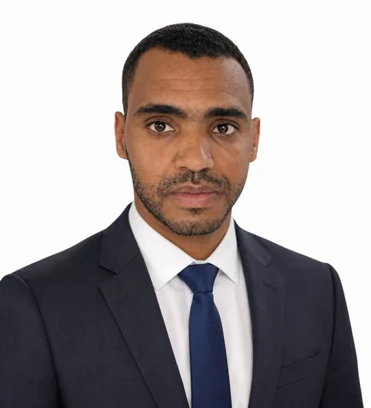
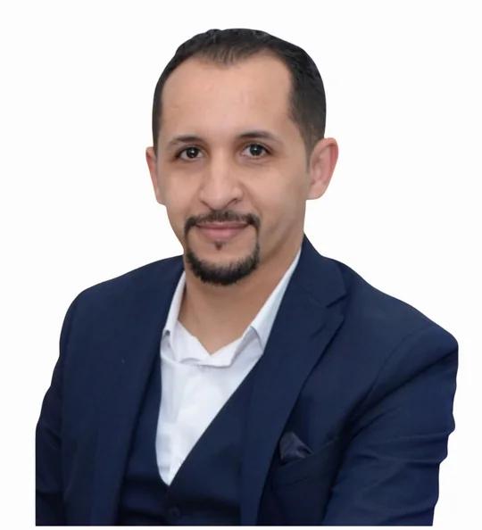
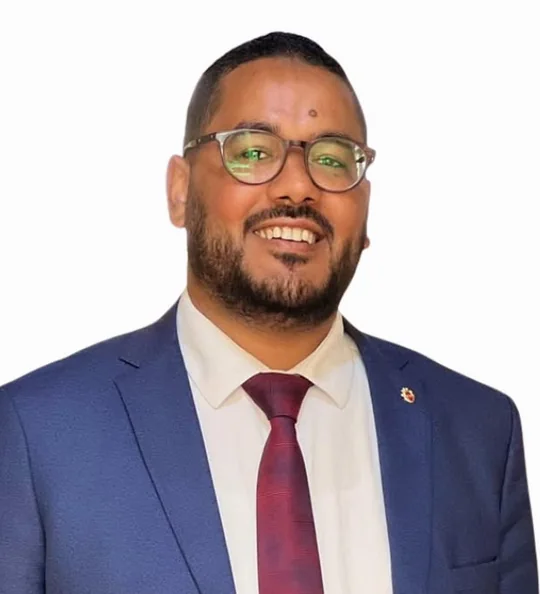
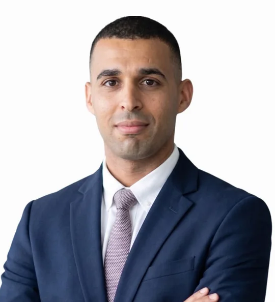
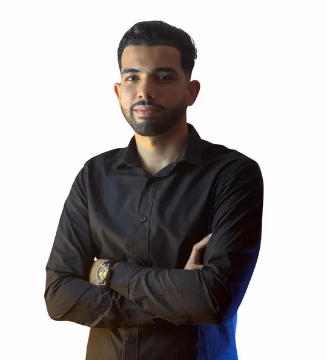

Sonaa Najah ?Generated assets
Built-in ImageGen ? teacher portraits supplied by the user and optimized as WebP.Hero
Footer banner
Teacher portraits

ذ. صابر مستور
اللغة العربية
ذ. محمد أسكنيض
اللغة الفرنسية
ذ. زكرياء خشاف
التربية الإسلاميةذ. زكي الأنصاري
الاجتماعيات
ذ. عبد الرحيم الزعاري
علوم الحياة والأرضذ. نوفل فزازي
الفلسفة
ذ. أمين السحات
اللغة الإنجليزيةذ. المهدي سويومطو
الرياضياتذ. زكرياء عنترة
الفيزياء والكيمياءذ. عثمان ساسي
الإشراف والمواكبةStudents & decoration
student-middlestudent-firststudent-secondcta-books
25 education icons